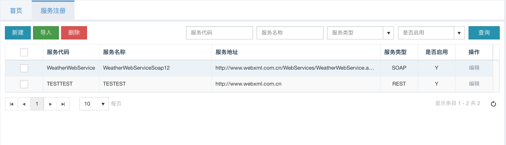
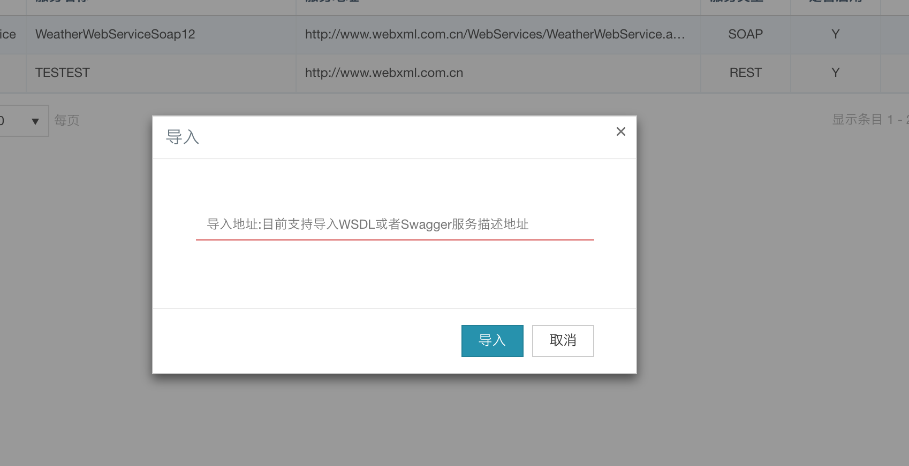
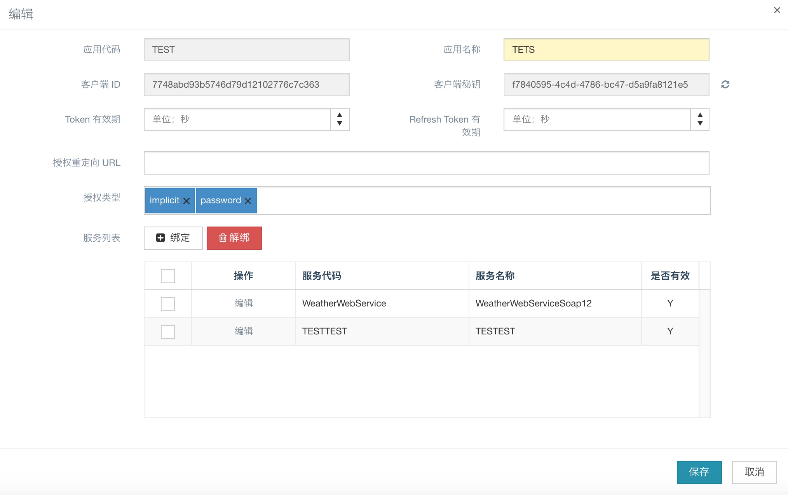
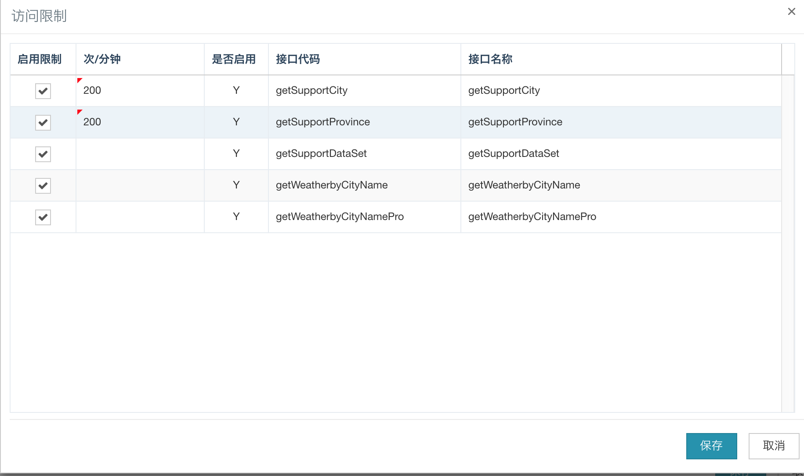
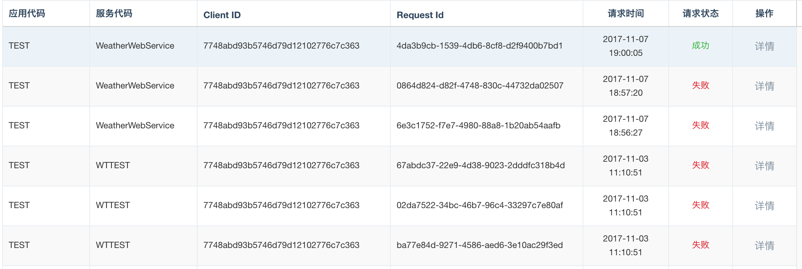
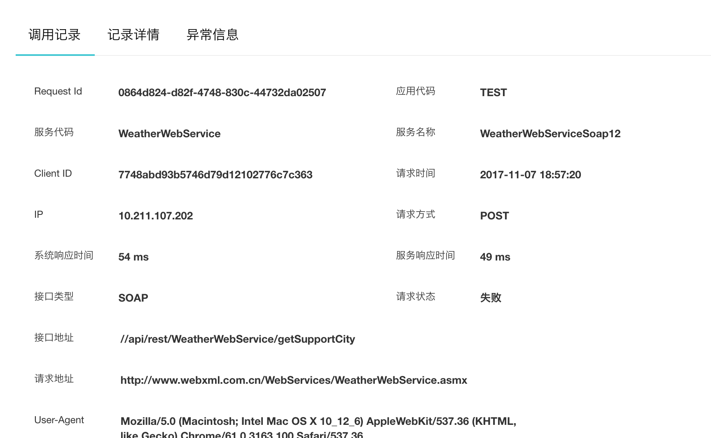
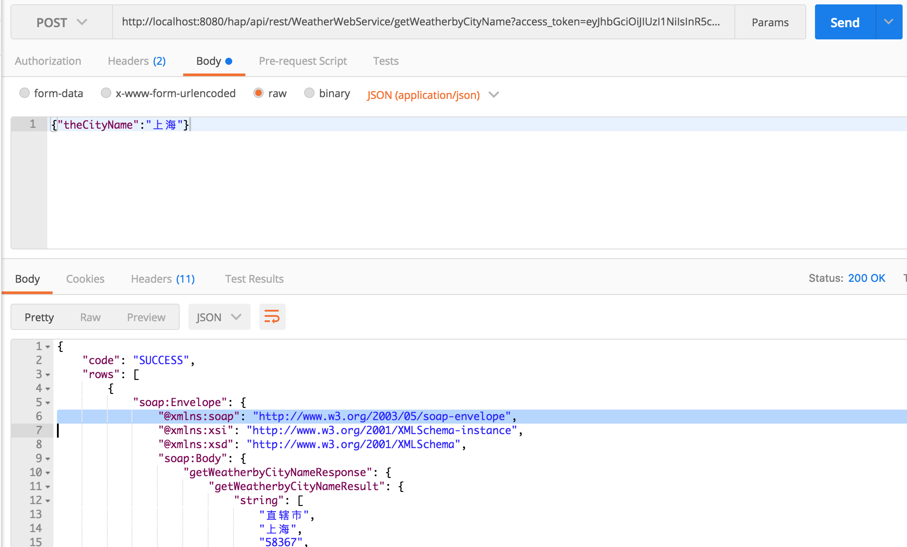

服务治理
HAP通过服务注册功能统一管理服务，规范数据返回内容，屏蔽接口调用细节，发布成需要oauth2认证的rest服务，通过应用管理将服务与应用绑定，控制服务的访问权限。提供调用记录，可以查看服务的调用状态和明细。
服务注册
主要用于注册第三方系统的服务，支持多种接口类型（目前支持SOAP，REST）的服务注册.

可以手动录入服务信息，也支持导入服务，可以自动解析WSDL描述文档和Swagger描述文档:

支持自定义对外发布的接口地址，固定以/api/rest开头
仅支持自定义二级路径 如：/api/rest/function/interface
对于受保护的服务资源，支持认证Basic 和Oauth2（客户端模式和密码模式）校验，对于SOAP接口，支持认证WS-Security的UsernameToken校验。
即服务认证配置，配置的是调用第三方服务所需要的认证，并不是发布服务的认证！

对于REST服务，支持通过配置映射类自定义参数转化处理，跟接口定义配置的映射类一样，可以直接使用。
对于SOAP服务，参数前缀 是指请求参数是否添加命名空间
应用管理
管理应用信息，一个应用即对应一个客户端，用于oauth2认证，可以配置授权模式，token失效时间等安全配置:

通过绑定服务控制服务的访问权限，针对每个绑定到应用的服务，可以单独配置每个接口的访问控制，包括能否访问，每分钟访问次数:

注意：应用绑定服务以后，根据当前应用的clientId,clientSecret获取token以后才可以访问指定服务！
调用记录
HAP会记录每一次服务调用信息，包括请求地址，响应时间，请求日期，请求状态等基本信息，默认情况下只记录调用失败的调用明细（请求参数，响应参数等），可以在服务注册的接口定义界面，开启始终记录调用明细。记录展示目前提供列表信息展示。


调用记录默认存储到数据库，支持自定义扩展，客户化处理调用记录: 1.实现com.hand.hap.api.logs.InvokeApiStrategy接口 2.修改config.properties,添加如下配置：
api.invoke.logStrategy.class=yourImplClass
测试服务
可以通过postman可以对注册的服务做简单测试
1.获取token
http://localhost:8080/hap/oauth/token?grant_type=password&client_id=7748abd93b5746d79d12102776c7c363&client_secret=f7840595-4c4d-4786-bc47-d5a9fa8121e5&username=admin&password=admin 申请一个新的应用，post请求类似地址，可以拿到acess_token
2.带上token访问服务发布地址： 
响应内容说明(与HAP的ResponseData 基本一致)：
- code : 成功->sucess,失败->错误code
- rows : 响应数据，只会有一个对象，即json数组size=1
- success: boolean类型，本次调用是否成功
- total： 始终为1
- requestId：请求id,作为本次调用的唯一标识，用于查询本次调用明细